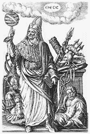

| Comparsa
per la prima volta in Cina, l'alchimia
è la più intrigante delle scienze occulte. Ancora
in parte sconosciuta, essa nasconde molti misteri
e si colloca all'origine di numerose scoperte
"chimiche". L'alchimia non è una scienza
appartenente ad un passato ormai remoto, bensì
una tradizione perpetuata fin dall'antichità che
conta tuttora dei discepoli fedeli. Questa pratica
mistica si basa sulla trasformazione dei metalli.
Nel corso dei secoli, molti iniziati hanno tentato
di svelarne il segreto, ovvero la capacità di
trasformare materiali comuni, come il piombo,
in un materiale prezioso e nobile, l'oro.
|
 |
| Al
suo aspetto scientifico, che richiede una perfetta
conoscenza della natura e delle sue leggi, si
fonde un approccio filosofico complementare. L'alchimia
costituisce un universo allegorico in cui esperienze
chimiche e simbolismo sono assai vicini. Alla
sua origine, si collocano i testi attribuiti ad
un personaggio mitico, Ermete, patrono
degli alchimisti, messaggero degli dei e maestro
delle scienze. |